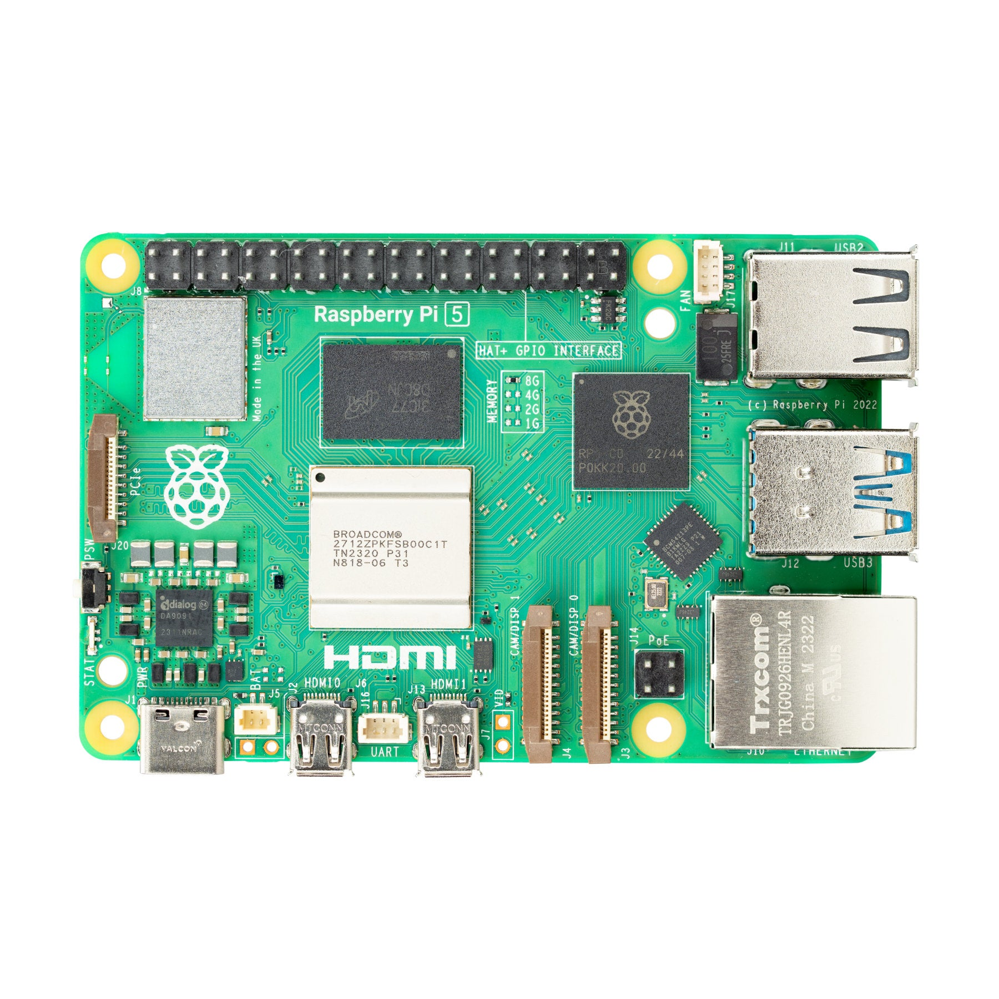
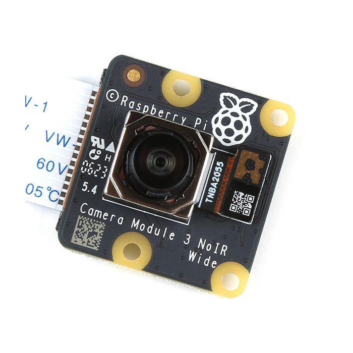

Prototype Log
Tracking the build of the 3-Raspberry-Pi MVP proof of concept. Three edge nodes, one central server (Donkey Runs), three major problems to solve.
What We're Proving
Before investing in a full PoE camera network and server rack, this prototype proves that the three core AI systems work in a real gym environment. Each Raspberry Pi handles one task. All three feed data back to the Mac Mini ("Donkey Runs") which fuses the data and logs it.
One person walks up to a barbell, loads some AlphaFit plates, does a set of squats, and walks away. The system correctly logs: who they are, how much weight they lifted, and how many reps they did. That is the MVP.
| Node | Hardware | Task | Output to Donkey Runs | Status |
|---|---|---|---|---|
| Pi 1 | Raspberry Pi 4/5 + Wide Cam | People Tracking (YOLO + DeepSORT) | Bounding boxes + Tracking IDs | To Do |
| Pi 2 | Raspberry Pi 4/5 + Standard Cam | Pose Estimation + Rep Counting | 17-point skeletons + Rep events | To Do |
| Pi 3 | Raspberry Pi 4/5 + Close-up Cam | Barbell Plate Colour Detection | Colour array + Total weight (kg) | To Do |
| Donkey Runs | Mac Mini M4 | Data Fusion + Logging | Structured workout log to PostgreSQL | To Do |
What You Need
The complete hardware shopping list for the MVP prototype.
| Item | Qty | Purpose | Est. Cost (AUD) |
|---|---|---|---|
| Raspberry Pi 4 (4GB) or Pi 5 | 3 | One per AI task | ~$120–$150 each |
| Pi Camera Module 3 (Wide Angle) | 2 | Pi 1 (tracking) + Pi 2 (pose) | ~$55 each |
| Pi Camera Module 3 (Standard) | 1 | Pi 3 (weight detection — closer view) | ~$45 |
| MicroSD Card 64GB (Class 10) | 3 | OS + model storage per Pi | ~$20 each |
| USB-C Power Supply (5A) | 3 | Powering each Pi | ~$20 each |
| Ethernet Cable (Cat6, 5m) | 3 | Wired connection to router | ~$10 each |
| Truss / Camera Mount Arm | 1 | Mounting all 3 Pis overhead | ~$80–$200 |
| Gigabit Network Switch | 1 | Connects all 3 Pis to Mac Mini | ~$40 |
Do NOT use the OV5647 5MP IR camera for the weight detection Pi (Pi 3). The IR LEDs wash out the AlphaFit plate colours (red, blue, yellow, green) making colour classification unreliable. Use the Pi Camera Module 3 which has proper HDR and no IR blasters.


Pi 1 — People Tracker
Mounted overhead with a wide-angle view of the entire workout zone. Runs YOLO person detection and DeepSORT tracking. Sends bounding boxes and tracking IDs to Donkey Runs every frame.
| Parameter | Value |
|---|---|
| Camera | Pi Camera Module 3 Wide (120° FOV) |
| Mount Position | Overhead, 2.5–3m height, looking straight down |
| Model | YOLOv8n-pose (nano — runs on Pi CPU) |
| Tracker | DeepSORT with max_age=90 |
| Output | JSON: {"track_id": 42, "bbox": [x,y,w,h], "confidence": 0.91} |
| Target FPS | 10–15 FPS (sufficient for tracking) |
| Transport | UDP socket to Donkey Runs on port 5001 |
Build Checklist
- Flash Raspberry Pi OS Lite to MicroSD
- Enable camera interface and test still image
- Install Python 3.11, OpenCV, and Ultralytics
- Run YOLOv8n on live camera feed — confirm detections
- Integrate DeepSORT — confirm persistent tracking IDs
- Build UDP sender — stream JSON to Donkey Runs
- Mount overhead and test from 2.5m height
Pi 2 — Rep Counter
Mounted at a 45-degree angle to the barbell station. Runs pose estimation to extract the 17 joint keypoints, then feeds them into the LSTM rep counter. Sends rep events and skeleton data to Donkey Runs.
| Parameter | Value |
|---|---|
| Camera | Pi Camera Module 3 Wide (120° FOV) |
| Mount Position | 45° angle, 2m height, aimed at barbell station |
| Pose Model | MoveNet Lightning (fastest, runs on Pi) |
| Rep Model | LSTM (60-frame rolling window) |
| Output | JSON: {"rep_event": true, "exercise": "squat", "keypoints": [...]} |
| Target FPS | 20–30 FPS (needs smooth keypoint data) |
| Transport | UDP socket to Donkey Runs on port 5002 |
Build Checklist
- Flash OS and install TensorFlow Lite runtime
- Download MoveNet Lightning TFLite model
- Run pose estimation on live feed — visualise 17 keypoints
- Extract joint angles (hip, knee, elbow) from keypoints
- Record 50 squat reps for LSTM training data
- Train LSTM on joint angle time series — target >90% accuracy
- Build UDP sender — stream rep events to Donkey Runs
Pi 3 — Weight Reader
Mounted at barbell height, looking directly at the loaded sleeve from the side. Detects the coloured stripes on AlphaFit plates and calculates total barbell weight. Sends the weight value to Donkey Runs.

| Parameter | Value |
|---|---|
| Camera | Pi Camera Module 3 (Standard, not Wide) |
| Mount Position | Side-on, ~1m height, aimed at barbell sleeve |
| Model | YOLOv8n custom-trained on AlphaFit plates |
| Output | JSON: {"plates": ["blue_20", "yellow_15", "yellow_15"], "total_kg": 70} |
| Target FPS | 5–10 FPS (weight doesn't change mid-set) |
| Transport | UDP socket to Donkey Runs on port 5003 |
Build Checklist
- Flash OS and install Ultralytics YOLOv8
- Photograph AlphaFit plates from side — collect 200+ images per colour
- Annotate images in Roboflow — draw bounding boxes, label colours
- Train YOLOv8n on annotated dataset — target >95% colour accuracy
- Test detection on live feed — confirm colour labels are correct
- Build weight calculator — sum plate values + 20kg barbell
- Build UDP sender — stream weight JSON to Donkey Runs
Donkey Runs (Mac Mini)
The Mac Mini is the brain. It receives data streams from all three Pis simultaneously, fuses them together by matching tracking IDs to rep events and weight readings, and writes the final structured workout log to PostgreSQL.
Pi 1 says "Track ID 42 is at position (320, 410)". Pi 2 says "A rep just happened at position (318, 415)". Pi 3 says "The barbell has 70kg loaded". Donkey Runs must match these three events — by position and timestamp — and write: "Track ID 42 completed 1 rep at 70kg". This matching logic is the hardest part of the MVP.
| Component | Technology | Purpose |
|---|---|---|
| UDP Listener | Python asyncio | Receives JSON from all 3 Pis on ports 5001–5003 |
| Fusion Engine | Python (custom) | Matches Track IDs to rep events by spatial proximity + timestamp |
| Database | PostgreSQL | Stores structured workout logs |
| Dashboard | FastAPI + simple HTML | Shows live workout data on screen |
Build Checklist
- Install PostgreSQL on Mac Mini — create gym_db database
- Build UDP listener — confirm receiving data from all 3 Pis
- Build fusion engine — match tracking IDs to rep + weight events
- Write fused data to PostgreSQL sets table
- Build basic FastAPI dashboard — display live workout log
- End-to-end test — one person, one set, correct log entry
Network Setup
All devices must be on the same local network. Wired Ethernet is strongly preferred over WiFi — UDP packets drop on congested WiFi and the tracking data becomes choppy.
| Device | IP Address | Connection | Port |
|---|---|---|---|
| Pi 1 (Tracker) | 192.168.1.101 | Ethernet (Cat6) | Sends to :5001 |
| Pi 2 (Counter) | 192.168.1.102 | Ethernet (Cat6) | Sends to :5002 |
| Pi 3 (Reader) | 192.168.1.103 | Ethernet (Cat6) | Sends to :5003 |
| Donkey Runs | 192.168.1.10 | Ethernet (Cat6) | Listens on :5001–5003 |
Overall Progress
Build Log
A running log of prototype progress, decisions, and findings. Add entries here as you build.